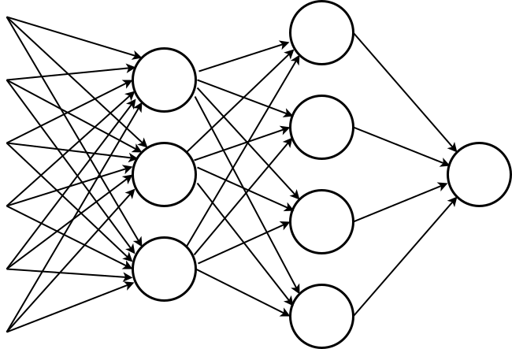
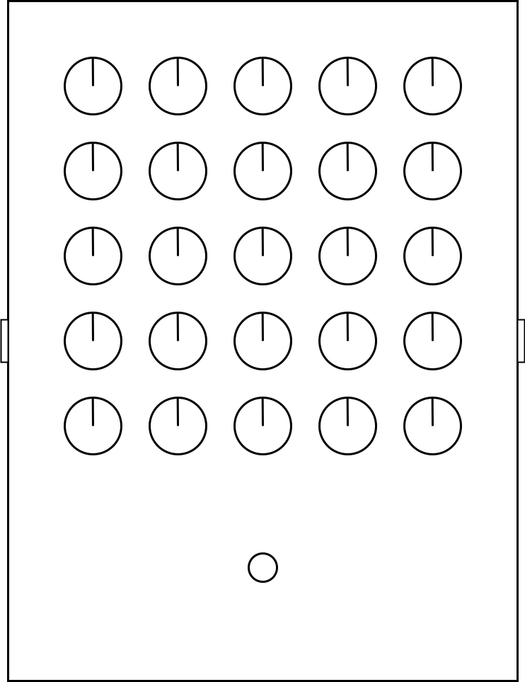

AI in Audio
Part I: Automated music generation and production
Spring 2019 - Audio Tech Talk Series
March 3, 2019
Terms
Artificial Intelligence
Machine Learning
Neural Networks
Deep learning
Simple Neural Network

"Neural Network" Guitar Pedal

Progressive growing of GANS
Progressive Growing of GANs for Improved Quality, Stability, and Variation | T. Karras et. al. | 2018
We have to go way back...
Wind chimes
China - 1100 BC
Aeolian harp
Greece - 6 BC
Markov chains
Iannis Xenakis - Analogique in 1920s
Symbolic music generation with LSTMs

Doug Eck - Blues Improvisation - 2002
Better symbolic music generation
Sony CSL - In the style of the Beatles - 2016
Raw audio synthesis with WaveNet
Deep mind - Classical piano - 2016
First automatic mixing system

Dan Dugan - Microphone Mixer - 1975
Grounded theory (Psychoacoustics)
Enrique Perez-Gonzalez - 2009
Knowledge engineering (Mixing rules)
Stuart Mansbridge - 2012
End-to-end vs. Parameterized models
Next Talk - March 12
AI in Audio
Part 2: Music Recommendation and Understanding